Introduction
Hello, and welcome to Danganmake This is a Danganronpa class trial editor. The purpose of this editor is to allow you to create your own trials and customize them to fit your preferences. With this tool, you can make your own fangames, what-if scenarios, or anything else you'd like. We made this project for you, and only for you. We do not want to harm Spike Chunsoft's reputation, nor do we claim ownership over anything. Spike Chunsoft is the sole owner of the Danganronpa franchise, and it belongs entirely to them.
What is Danganmake?
It's a Danganronpa game engine that lets you create your own fangames. Specifically designed
to mimic the Danganronpa experience
The engine's main purpose is to be user-friendly and require no programming knowledge
to create your own fangames.
The engine is built entirely with Godot Engine, an open-source game engine.
To facilitate the use and creation of this engine, popular asset libraries were used, such as:
Dialogue Manager - Nathan Road
Phantom Camera - Ramokz
Sparkle Lite - Neohex
It's an experience to create your own mods and share them with the community, or just for yourself.
If you're interested in sharing your creations or playing community creations, we recommend joining the Discord server.

What is an asynchronous function?
It's a block of code that runs in the background without interrupting the main program flow.
This simply means that if there's a block that says it will display a fade-in in the middle of the visual novel, it will perform this action first and then queue up the text until it finishes processing and the text can be displayed. Keep in mind that not all actions are necessarily asynchronous functions and won't necessarily wait for their own event to finish before the next one can play. Examples include functions for changing expressions on the 2D stage or left and right swipe movements.
The point of this explanation is that the engine doesn't have every action built in to handle every detail, but thanks to asynchronous functions, you can create certain execution orders for events to achieve what you're looking for. For example, if you need a black fade at the beginning of the intro, you can insert a 'screen_fade in' and a 'wait' together to make it wait for the desired duration.
How to Read the Documentation
When you look at the event sections, you will see lines that look like programming code. It's just a specific format to tell the engine exactly what to do. Here is a breakdown of how to read them:
The Dot (.)
You will often see things like CharacterScript.Change_bg. The first word (CharacterScript, GlobalSound, CharacterList) is the engine's internal manager. The dot ( . ) connects it to the specific action you want to execute.
The Parentheses ( )
These contain the Parameters (the specific details the action needs to work). If an action doesn't need details, the parentheses will be empty (). If it does, you must put the values inside them.
Parameters & Data Types
Inside the parentheses, the documentation tells you what kind of data to insert:
- String: Means text. You must write your value inside quotation marks. Example: "Chiaki" or "Idle".
- Int or Float: Means numbers (Int is a whole number, Float is a decimal). Do not use quotation marks. Example: 50 or 1.5.
Default Values (=)
If a parameter has an equals sign (e.g., FOV : Int = 50), it means this parameter is optional. If you just leave it empty, the engine will automatically assume it is 50. You only need to write a number if you want a different result.
Controls
The current game design is computer-based, so there is no controller support at this time.
During visual novel dialogues, you can press the action key to skip a dialogue. This key includes:
- space
- enter
- left click
- controller action button
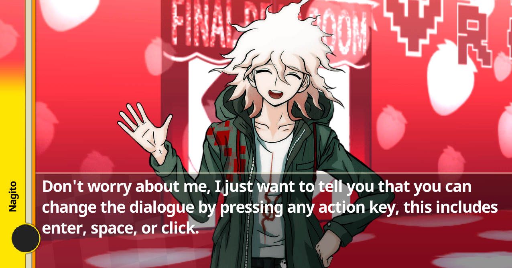
When we talk about the general gameplay of Non-Stop Debate, you can move the cursor with the mouse and change the bullet selection with the arrow keys:
- up arrow
- down arrow
- left arrow
- right arrow
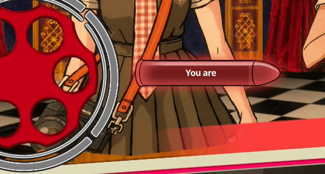
Just like in Danganronpa, you can also advance or rewind time with your focus gauge using the following keys:
- Shift (Focus gauge)
- Space (advance time)
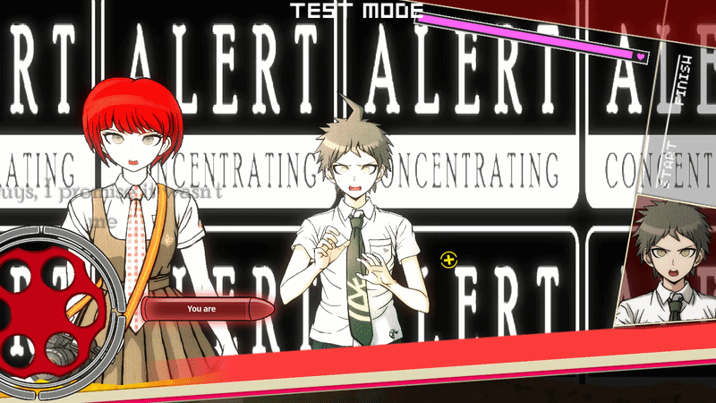
When you choose a culprit, you can move with the arrow keys:
- Left arrow
- Right arrow
and you can also select with the action key:
- Space
- Enter
- Left click
- Action button Command
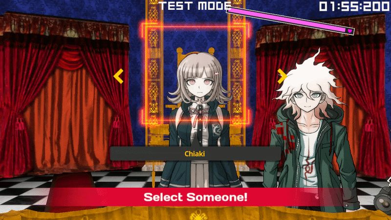
When you have multiple choice, you can navigate with the arrow keys:
- Up arrow
- Down arrow
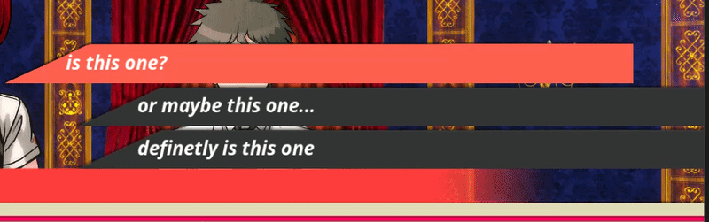
Here you are presented with evidence where you have to choose the correct answer. To choose a bullet, you must:
- Right-click
You can also see the description by left-clicking on the details box
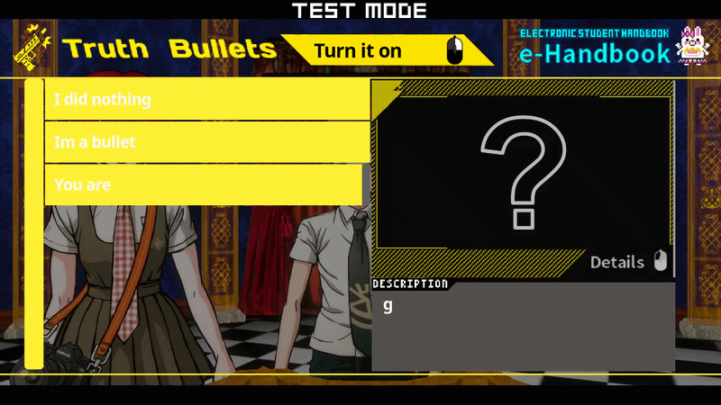
How to make your mod
You can make your own mod by pressing the new button in make mode

The next thing you'll need to do is choose a title and description for the mod; optionally, you can add an icon and a thumbnail.
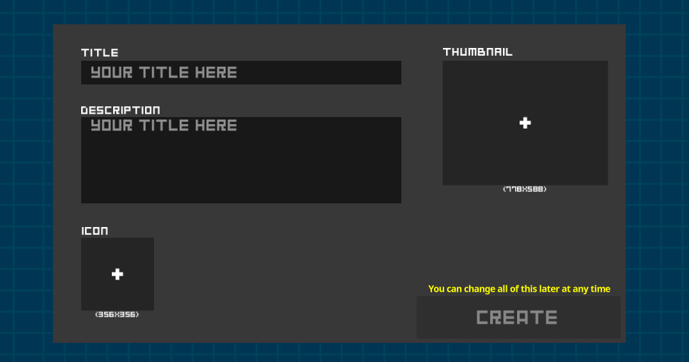
Now you can work comfortably using the tools!
How Editors Work
The editor is divided into several sections:
- Characters -> This is where you configure the characters present
- Intro -> This is simply the 2D editor for character dialogue
- Trial -> This is simply the 3D editor for controlling gameplay and dialogue
- Settings -> Return to the section to configure the title and description
- Assets -> This is where you configure the assets present
- Test -> This is for testing your creation in either the 2D or 3D scene
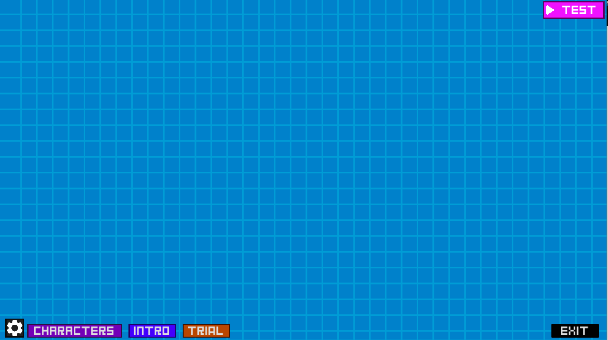
Where your assets go?
All your assets go in the folder with the same name. If it doesn't already exist, using some of the editor's functions will create it, but if necessary you can create it yourself. You can do the same with the folders inside.
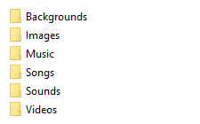
In the assets menu you can insert images, videos, and audio files etc. also you may notice that in videos you need to use .ogv theora for it to work, also for audio files you need to insert only .ogg or .mp3 files, wav is not allowed
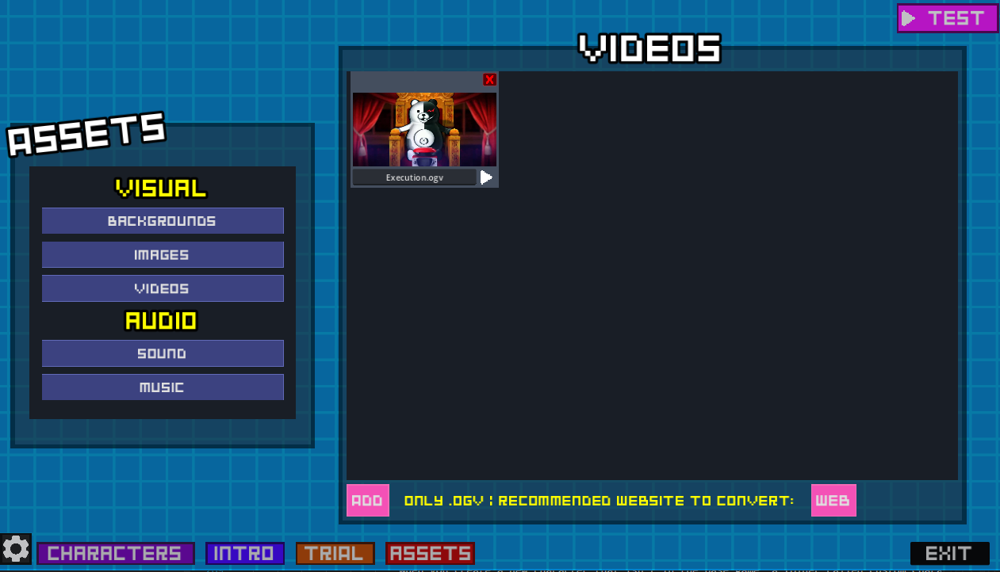
Where your characters go?
When you create a new character that isn't in the base game, a folder called Custom_Characters will be created. You should add your characters using the editor.
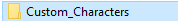
Callable Functions
One advantage of using the Dialogue Manager is that its creator provided ways to execute actions. The actions that can be executed for Danganmake are:
- GlobalSound
- CharacterScript
- CharacterList
- Scene-specific functions (See How to use functions in the scene for more information)
- BBcode
Each of these tags can execute different functions within the same editor.
Fun fact: The GlobalSound tag is used throughout the game, both in the menu and the editor, to display any type of sound.
GlobalSound Events
GlobalSound is a script that runs when the game starts, as it's responsible for loading all the sounds in the game, including voices, sound effects, and songs. It also has a repertoire of functions that the user can utilize.
do
GlobalSound.Method("Parameter")
The repertoire of events that GlobalSound can use are as follows:
Load_SFX(SoundName : String) -> it's self explanatory plays a sound by his name only if exist
Load_MUSIC(SongName : String) -> same goes for music
Load_VOICE(VoiceName :String) -> also same goes for voices one details is this only can play custom voices of your current roster
Stop_SFX() -> if an sfx is playing it will stop it
Stop_MUSIC() -> same goes for music
Stop_FadeOut_MUSIC() -> It will cause the music to fade out over a duration of 0.7 seconds.
Stop_VOICE() -> same goes for voices
Pitch_Voice(Pitch : Float = 1.0) -> If there is a voice playing right now, this function will change its pitch, this indirectly also changes its speed due to the pitch
CharacterScript Events
CharacterScript is one of the most important autoloads in the engine. It is responsible for handling all visual novel elements, screen effects, backgrounds, transitions, and character animations on the 2D stage.
WARNING: The use of these methods should be limited to the 2D scene; using them in other scenes, including 3D, will certainly cause some errors.
do
CharacterScript.Method("Parameter")
The repertoire of events that CharacterScript can use are as follows:
Change_bg(BackgroundName : String) -> Changes the current 2D background.
CH_EXPRESSION(CharacterName : String, EmotionName : String) -> Changes the character's sprite smoothly creating a shadow of its previous image.
CH_EXPRESSION_OLD(CharacterName : String, EmotionName : String) -> Changes the character's sprite instantly (legacy).
Left_Slide(CharacterName : String, EmotionName : String) -> Makes a character enter the screen sliding from the left.
Right_Slide(CharacterName : String, EmotionName : String) -> Makes a character enter the screen sliding from the right.
fadein() -> Fades in the current character sprite on screen.
fadeout() -> Fades out the current character sprite.
Show_image(ImageName : String) -> Displays an image from your assets folder on the screen.
Remove_image() -> Removes the currently displayed image.
Play_Video(VideoName : String) -> Plays an .ogv video from your assets folder.
screen_fade_in(Speed : Float = 1.0, ColorName : Color = Color.BLACK) -> Fades the screen to a specific color.
screen_fade_out(Speed : Float = 1.0, ColorName : Color = Color.BLACK) -> Fades the screen back to normal from a solid color.
Screen_Shake(NodeName : String, Intensity : Float, Time : Float) -> Shakes the screen or a specific node (e.g., "all", "bg", "Character") for a set duration.
Stop_Screen_Shake() -> Stops any active screen shake immediately.
Screen_Flash() -> Creates a quick flash effect on the screen.
Wait(Time : Float) -> Pauses the execution of the next dialogue/action for the specified time in seconds.
Memory(MemoryID : Int) -> Calls and plays a specific Memory block by its ID.
Show_3D_Court() -> Displays the 3D trial background environment.
Hide_3D_Court() -> Hides the 3D trial background and returns to the 2D background.
Obtain_Evidence(Truth_Bullet : String) -> It will display an animation of obtaining evidence with the image of the truth bullet selected. (its sticky so it won't dissapear after the animation)
Remove_Evidence() -> It will make an animation for removing the Obtained Evidence animation.
Enable_Orange() -> It will make the orange filtrer from Memory visible
Disable_Orange() -> It will hide the orange filtrer
CharacterList Events
CharacterList is the core autoload managing the 3D court environment and character interactions within it.
WARNING: The use of these methods should be limited to the 3D scene; using them in other scenes, including 2D, will certainly cause some errors.
do
CharacterList.Method("Parameter")
The repertoire of events that CharacterList can use are as follows:
CH_EXPRESSION_3D(CharacterName : String, EmotionName : String) -> Changes the expression of a character currently in the 3D room.
focus_CH(CharacterName : String, FOV : Int = 50, Speed : Float = 0.2) -> The camera will perform a simple linear movement to focus on a character with the specified FOV and speed.
focus_CH_zoom_in_rotated(CharacterName : String, FOV : Int = 50, Duration : Float = 5.0, Angle : Float = -15.0, Z_Pos : Float = 1.8, Y_Rot : Float = 0, Speed : Float = 0.0) -> The camera will start at the specified angle and smoothly rotate back to its original position while zooming in.
focus_CH_zoom_out_rotated(CharacterName : String, FOV : Int = 50, Duration : Float = 5.0, Angle : Float = -15.0, Z_Pos : Float = 1.8, Y_Rot : Float = 0, Speed : Float = 0.0) -> Same as above, but zooming out.
focus_CH_zoom_in(CharacterName : String, FOV : Int = 50, Duration : Float = 5.0, Z_Pos : Float = 1.8) -> Standard zoom in animation towards the character.
focus_CH_zoom_out(CharacterName : String, FOV : Int = 50, Duration : Float = 5.0, Z_Pos : Float = 1.8) -> Standard zoom out animation from the character.
focus_CH_zoom_in_Top(CharacterName : String, FOV : Int = 50, Duration : Float = 5.0, Z_Pos : Float = 1.8) -> Zooms in focusing slightly higher on the character.
focus_CH_slow_camera_L(CharacterName : String, FOV : Int = 50) -> The camera is positioned slightly to the Left (L) and slowly centers itself.
focus_CH_slow_camera_R(CharacterName : String, FOV : Int = 50) -> The camera is positioned slightly to the Right (R) and slowly centers itself.
Choose_culprit(ID : Int) -> Enters the culprit selection mode. Note: It is highly recommended NOT to use this function manually from the root, as its ID depends entirely on specific data existing in a JSON file generated by the editor.
Shake(NodeName : String, Intensity : Float, Duration : Float) -> Shakes a specific node within the 3D scene for a set duration e.g(GUI, Bullets_Gui, dialogue [dialogue is most common one]).
Wait(Time : Float) -> Pauses the execution for the specified time in seconds.
Play_I_See() -> Prepares and plays the "I See" (cut-in) animation sequence.
present_evidence(CorrectAnswer : String) -> Opens the truth bullet menu to present evidence. Note: It is strongly recommended NOT to use this function manually. It requires formulating the question with specific boolean values and structure that is currently only manageable through the editor.
Show_Orange_filter() -> Activates an orange filter overlay on the screen.
Hide_Orange_filter() -> Deactivates the orange filter overlay.
fade_in(Time : Float) -> Performs a screen fade-in transition over the specified time in seconds.
fade_out(Time : Float) -> Performs a screen fade-out transition over the specified time in seconds.
Trial_Ended() -> Ends the current trial.
Scene-Specific Functions
Aside from the Global Autoloads, you can directly call functions that belong exclusively to the current scene you are playing. Since these functions exist only in their respective environments, you must be careful not to call a 3D function while in a 2D scene, or it will cause an error.
To call them using the Dialogue Manager, you just write the name of the function directly using ' ! ' (See how to use functions in the scene for more information)
! Method("Parameter")
2D Scene Functions
The following functions can only be executed when you are in the visual novel (2D) environment:
final_screen() -> Ends the current visual novel segment and transitions to the next corresponding scene. (Note: This is automatically disabled during test mode to prevent closing the editor).
3D Custom Scene Functions
The following functions are exclusive to the 3D Class Trial environment. They handle the minigames, health system, and trial progression:
Health_Loss_effects() -> Plays the damage sound effect and violently shakes the dialogue box.
Health_loss(life : Int = 15) -> Reduces the player's life bar by the specified amount (defaults to 15).
Health_Recovery() -> Completely restores the player's life bar to 100%.
Start_Select_Someone(id : Int) -> Activates the "Choose Culprit" with an ID. This ID is the identifier of who you select initially (starts at 0, but as you advance from left to right, the counter increases or decreases and by the way the number can't be negative if is zero then change from the biggest one that exist in the characters that are in the trial).
Hide_Reticle() -> Smoothly fades out the player's aiming reticle from the screen.
Trial_End() -> Triggers the cinematic end of the trial. It zooms into the current character, fades out the music, plays the "All Rise" closing sequence, and loads the post-trial screen.
Main_menu() -> Instantly exits the current trial, restores the mouse cursor, and returns the player to the Main Menu.
BBCode Tags
BBCode tags are used directly inside the dialogue text to format words, add colors, text animations, and control the typing pacing. Unlike callable functions, these tags wrap around the text or are inserted directly into the sentence.
Also, keep in mind that you can look up how BBCode works in the official Godot documentation.
[color=red]This text is red![/color]
The most common BBCode tags you can use in your dialogues are:
[b]text[/b] -> Makes the text Bold.
[i]text[/i] -> Makes the text Italic.
[color=red]text[/color] -> Changes the text color. You can use names like "red", "yellow", or hex codes like "#ff0000". Perfect for highlighting important clues!
[center]text[/center] -> Centers the text inside the dialogue box.
[shake rate=20.0 level=5 connected=1]text[/shake] -> Applies a shaking animation to the text. Perfect for characters shouting or panicking.
[wave amp=50.0 freq=5.0 connected=1]text[/wave] -> Applies a wavy animation to the text.
[tornado radius=5.0 freq=2.0 connected=1]text[/tornado] -> Applies a chaotic tornado animation to the text.
[wait=1] -> Pauses the dialogue typing for the specified amount of seconds (e.g., 1 second). You don't need to close this tag.
[speed=2]text[/speed] -> Multiplies the typing speed. For example, 2 makes it twice as fast, 0.5 makes it half as fast.
[next=auto] -> Automatically advances to the next dialogue line when finished typing, without waiting for the player to click. You can use "auto" (calculates time based on text length) or a number like [next=2.5] to wait exactly 2.5 seconds before skipping. You don't need to close this tag, just put it at the end of the sentence.
2D Scene
The 2D scene, also known as the Intro, is where you plan the context for the story you want to tell. In this mode, it's similar to Danganronpa, where you tell a story in a 2D visual novel environment. The difference is that you have all the evidence from the start, so you'll have to make the story fit with the Bullets of Truth you've added. The limitation is your imagination; you can pretend you never had any evidence, but you gradually acquire it. How you tell the story is what matters. You have a ridiculous number of tools to make that story the best it can be, though obviously, those tools are limited by what the original Danganronpa can do.
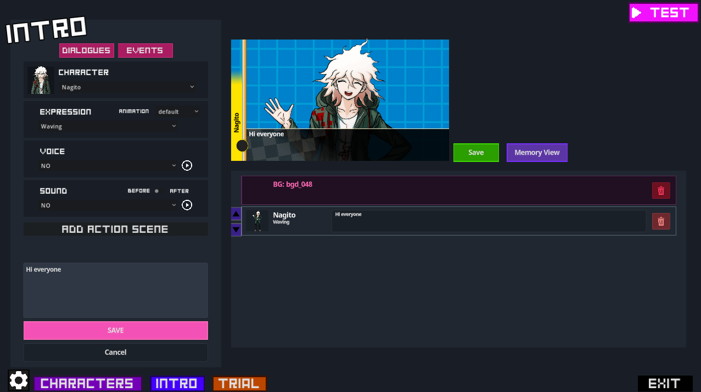
Character Expressions
In the 2D editor, the trick is that there aren't actually multiple characters; it's just one character whose sprite or expression changes during dialogue. This is a real performance boost. The expressions configured in the Character Offset Editor (see the Character Editor section) will appear in the Expressions section.
An animation can be added to each expression. By default, it will have the animation of a residual image from the previous expression that disappears. If you need something instantaneous, you can check the Instant option.
There are two important animations: Left_Slide and Right_Slide. The purpose of these animations is to make it appear as if the character is coming from one side when you switch characters. It's highly recommended to use these every time you switch dialogue to another character.
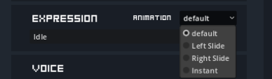
Character Voices
In the dialogue creation panel, you can select a specific voice clip for the character. These voices are automatically fetched from the character's designated 'Voices' folder in the roster. They will play exactly when the character's dialogue line starts.
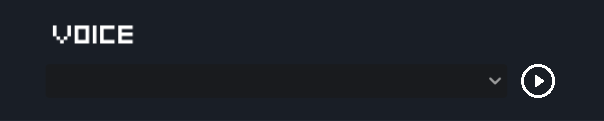
Character Sounds
Similar to voices, you can assign sound effects (SFX) to a dialogue line. This is typically used for impact sounds, desk slams, or specific text-scroll noises to give more impact to the scene.
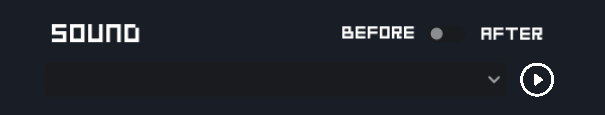
Before and After
You will notice a toggle switch (checkbox) next to Sounds and Action Scenes. By default (unchecked), the sound or action will play before the dialogue text appears. If you check the box, the effect will execute after the dialogue line is completely spoken and before moving to the next block.
How to use actions scenes
You can add multiple action rows to a single dialogue block using the "add action scene" button. This allows you to stack visual effects like Screen Shakes, Screen Flashes, Fades, or Waits simultaneously with the dialogue line..
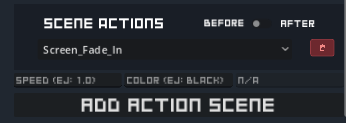
How to use Memory block
Memory blocks allow you to create isolated timelines, perfect for flashbacks or evidence descriptions. Use the 'Memory' event button to create a Memory Start and End block with a unique ID. Anything placed inside will be hidden from the main flow. To trigger it, use the 'Call' button to insert a Memory Call block in your main timeline. Additionally, there is a button to switch the memory view mode to the normal view stream.
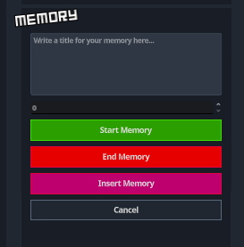
Change Background
Using the 'Change Background' event block, you can switch the 2D environment background. You can use the default Danganronpa backgrounds or upload your own custom .png/.jpg images directly through the editor.
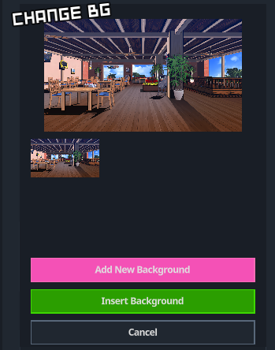
Change Music
The 'Change Music' event block allows you to change the background music. The selected track will loop automatically until you stop it or change it to another song.
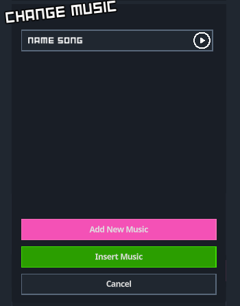
Show 3D Court
The 'Show 3D Court' event block toggles the 3D court environment. When set to SHOW, it hides the 2D background and displays the 3D trial room behind your 2D characters. Setting it to HIDE reverts it back to the standard 2D background.
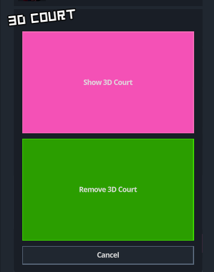
Set Image
The 'Set Image' event block allows you to display a custom static image overlay on the screen, which is extremely useful for showing evidence, clues, or cut-ins. The editor also provides a specific 'Remove Image' button to clear it from the screen.
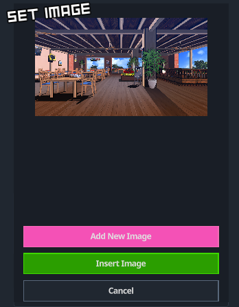
Set Video
Using the 'Set Video' event block, you can play full video cutscenes over your game. Please note that due to engine limitations, videos must be in .ogv format to be recognized.
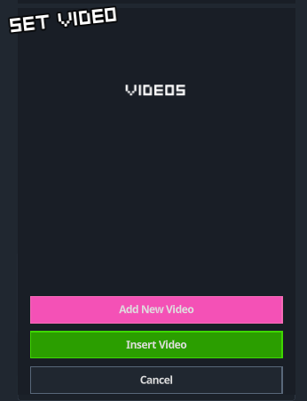
End Chapter Dialogue
The 'End Chapter Dialogue' event block acts as a visual divider. Any dialogue or action placed below this block will be automatically separated and compiled as the ending sequence of the chapter.
3D Scene
The 3D Editor is the core of the Class Trial experience. Unlike the 2D Editor, which is designed for narrative and exposition, the 3D environment is where the actual gameplay happens. Here you manage the podiums, the camera movements, and the interactive debates where the player must find contradictions using Truth Bullets.
Shared Features
Many of the tools you learned to use in the 2D Editor are also available in the 3D Editor. They function identically, so if you need a refresher on how they work, you can click on the following links to review their documentation:
• Character Expressions
• Character Voices
• Character Sounds
• Change Song
• Set Images
• Set Videos
Also you may know that End chapter dialogue also works in the 3D but it only make a transition to the 2D scene and show the End Chapter Dialogue of the 2D scene and it doesn't make a visual divider like in the 2D editor.
Configuration Menu
This menu takes you to a flow where you can insert dialogue completely separate from the main storyline; this relates to errors you might make during the trial and how they lead to its failure.
And yes! You can use every feature of the 3D editor, including inserting events.
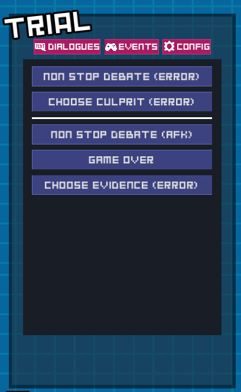
Non Stop Debates
This is the main event of the trial. The Non Stop Debate block allows you to configure a sequence of dialogue lines that advance automatically. You must define which character speaks, select a specific word or phrase to act as a "Weak Point," and assign the correct Truth Bullet that the player must shoot to break that argument.
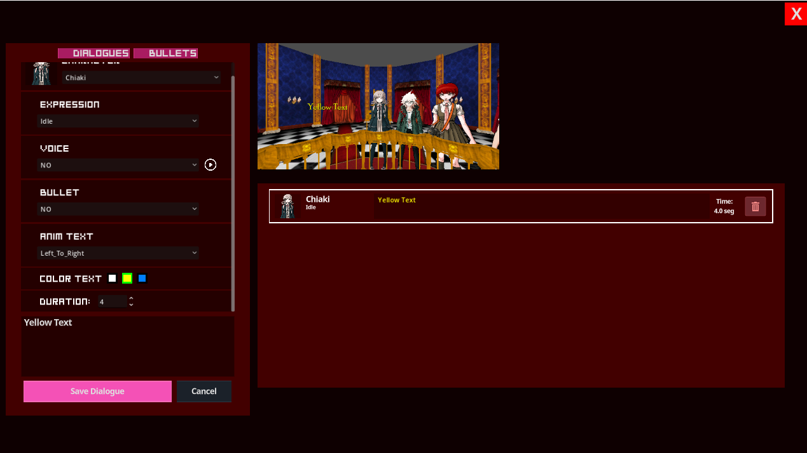
Choose Culprit
This event pauses the trial and forces the player to point out a suspect among all the characters currently present in the 3D room. In the editor, you only need to select which character is the "Correct" answer for the story to proceed.
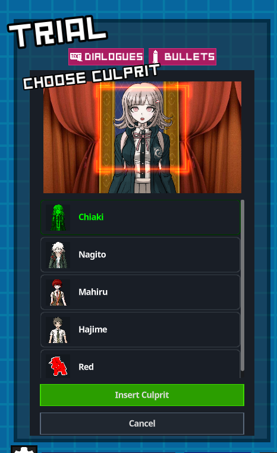
Choose Answer
Sometimes a question has multiple options. This block generates a multiple-choice menu on the screen (A, B, or C). You must write the text for the options and define which one is the correct path. You can also press the dialogue button to take you to a new dialogue flow diferent from the main storyline and you can insert dialogues even use events and everything.
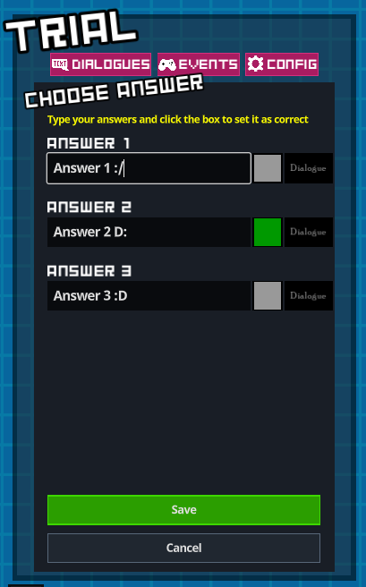
Choose Evidence
This block opens the player's Truth Bullet menu, demanding they present a specific piece of evidence to back up a claim. You configure this by simply selecting the specific bullet that counts as the right answer. Presenting the wrong evidence will penalize the player's health.
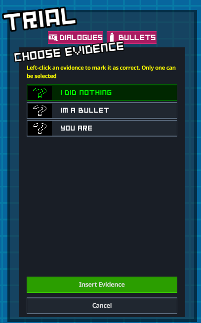
What is a Custom Script
WARNING: You must be careful when using these events; they are case-sensitive, and any typo will certainly cause some errors
In the custom script events section, there's what's called a 'custom block'. It's just a normal block, but the difference is that you don't add actions through the editor; you add them through code (see Event Terms for more information). For example, thanks to the use of CharacterScript or CharacterList, you can call each function separately and combine them to create a specific event.
An important point is that, for ease of use, whenever you write a function, if you are in the 2D Editor it will input 'do CharacterScript' but in the 3D Editor it will input 'do CharacterList' that will be written directly before your code. The only exception is when you call the 'GlobalSound' function.
If you write a colon ' : ' in the middle of a line of text, the editor interprets it as character dialogue, for example, 'Hajime: Hi'.
if you write a exclamation mark ' ! ' at the beginning of the line, you have to manually write the action you want to execute, for example, '! Script.Method'. You'll realize that this is the most basic way and primitive to program in the editor, but it can be used for very specific things and to execute functions that only exist in the current scene (see "How to use functions on the scene" for more information).
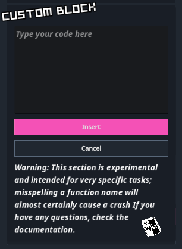
Usage
WARNING: You must be careful when using these events; they are case-sensitive, and any typo will certainly cause some errors
Functions that don't use ! are simply executing 'do "MethodScript" ' CharacterScript for 2D Editor and CharacterList for 3D Editor, and to generate dialogue text, simply type your character's name followed by ' : ' and the text you want it to say (See Event Terms for information on callable functions).
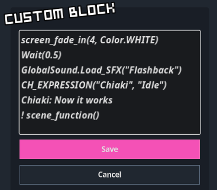
how to use functions in the scene
This is used in conjunction with the custom script. It works by using ' ! ' at the beginning of the line to write the method yourself. This can be used for very specific tasks, but it also allows you to call functions that already exist because they are loaded into the scene you are in. For example, in the 3D scene,
! CharacterList.focus_CH(Character: String, FOV: float, Speed: float)
or in the 2D scene
! CharacterScript.Screen_Shake(Node Affected: ej: "all", intensity: float = 25.0, duration: float = 1.5)
and you can also call functions that exist in the scene :
(This example only works in 3D Scene because Health_loss doesn't exist in 2D)
! Health_loss(life: int = 15)
means you can also remove or even add life. That's its usefulness.
What is the Character Selector?
In this menu, you will add the characters who will be present at the trial; select them using the left mouse button. You can, of course, add custom characters. Additionally, you can add a character to act as Monokuma using the right mouse button, placing them on the throne; you can also access the 2D and 3D character offset menus via their respective icons.
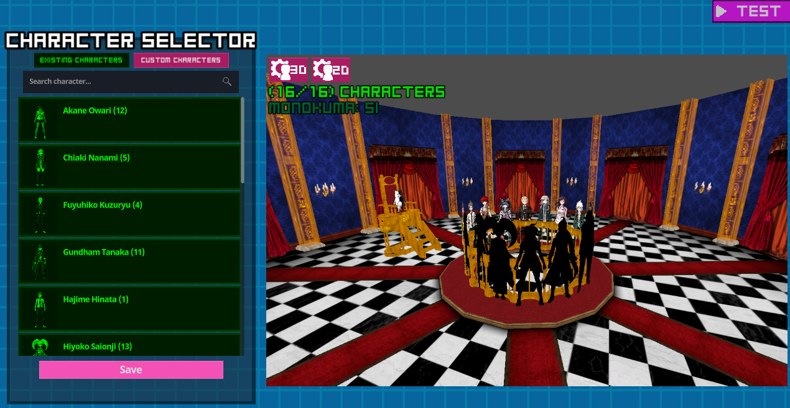
What is the Character Editor?
The Character Editor is a built-in visual tool that allows you to manage the cast of your Danganronpa trial. With this tool, you can explore the characters already included in the base game or create completely new original characters for your specific mod. It automatically handles the creation of the necessary folders (like the 'Voices' folder) and safely imports your images so they are ready to be used in the 2D and 3D scenes.
Usage
The interface is divided into two main panels:
The Left Panel: Here you can browse between 'Existing Characters' (the base game roster) and 'Your Characters' (custom characters created for your mod). You can use the search bar to easily find a specific character or click the '+ Create New Character' button at the bottom to start from scratch.
The Right Panel (Editor): Once you select or create a character, this panel activates. You can use the '+ Add sprite' button to select .png or .jpg images from your computer. The 'Sprites List' will show all the expressions the character currently has and the new ones you are adding. Finally, press the confirmation button at the bottom to save your changes and import the sprites.

What is the 2D Character Offset Editor?
The 2D Character Offset Editor is a visual tool designed to align and scale your character sprites correctly. Since custom images can vary greatly in resolution and blank space, they might not center perfectly on the screen by default. This tool allows you to adjust their exact position and size so they look flawless in your visual novel scenes. All adjustments are automatically saved in a 'config.json' file inside the character's specific folder.
Usage
To use this tool, simply select a character from the dropdown menu on the left panel. The editor will automatically load their default 'idle' sprite onto the visual reference background. Use the Scale slider to make the character bigger or smaller, and the Pos X (horizontal) and Pos Y (vertical) sliders to position them exactly where they belong. Once you are happy with the visual alignment, click the pink Save button to generate the configuration file and apply the changes globally.
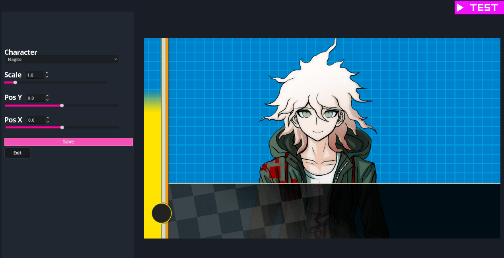
3D Character Offset Editor
Just like the 2D Offset Editor, the 3D version allows you to adjust the scale and position of your characters, but specifically for the 3D trial environment. In the trial, characters are placed in physical 3D slots (podiums), so setting the correct height and size is crucial to prevent them from looking like they are floating or sinking into the floor.
To use it, select a character from the dropdown. The editor will place them in a real 3D slot using their default 'idle' sprite. Adjust the Scale to make them fit the podium, and use Pos X and Pos Y to center them and plant their feet firmly. Once you hit Save, these values are added to the character's 'config.json' file alongside the 2D settings, ensuring they look perfect in both modes.
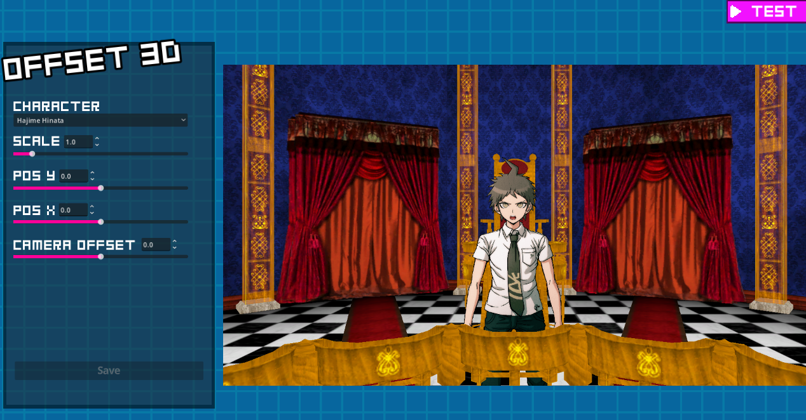
Special Sprites
In this section, you can prepare special sprites for the trial; if no sprites are prepared, nothing will appear when you use them. You can also assign audio to play when they are triggered. Please note that only the "Counter" and "I_see" sprites will be unlocked if the character you are editing is the main character.
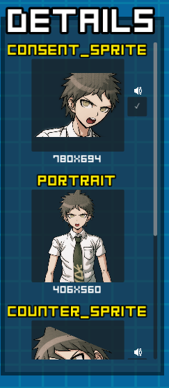
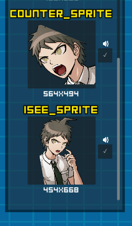